Traditionell Pascuense dansLinda vs Charlie i retro gojira style
Bilder på Linda, Charlie & Carlos
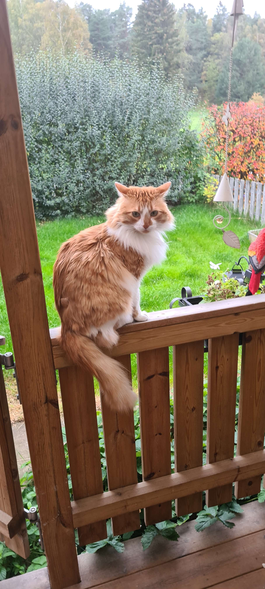
Charlie sitter på Altanen
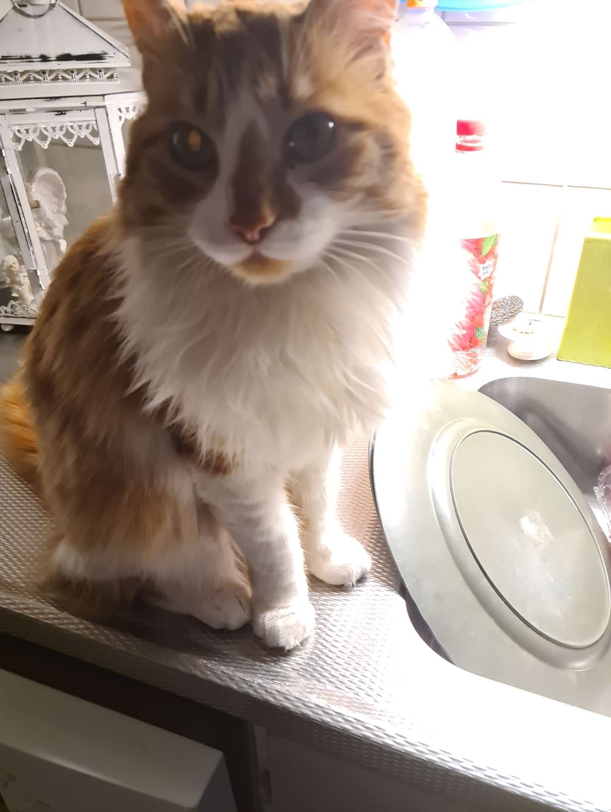
Charlie med sina stora ögon
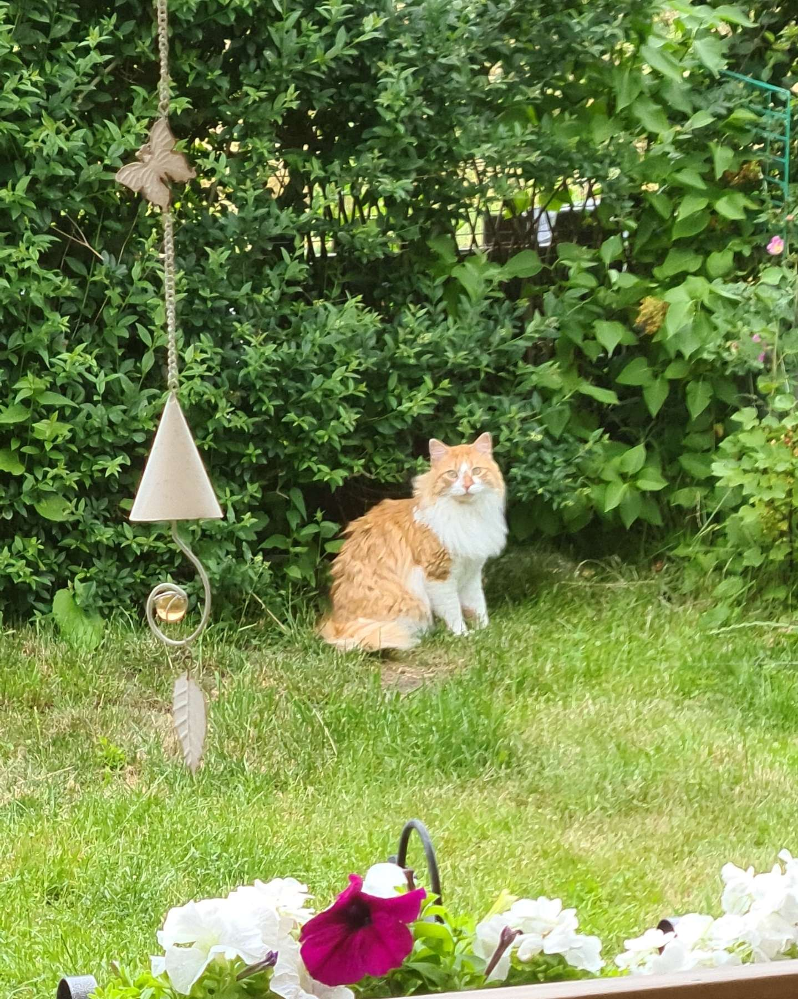
Charlie ute på trädgården Charlie sover inuti en låda
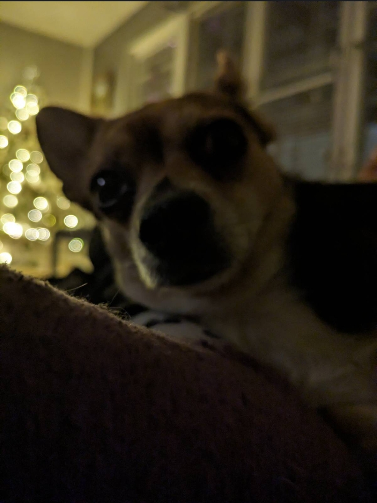
Linda har en fin dubbelhaka
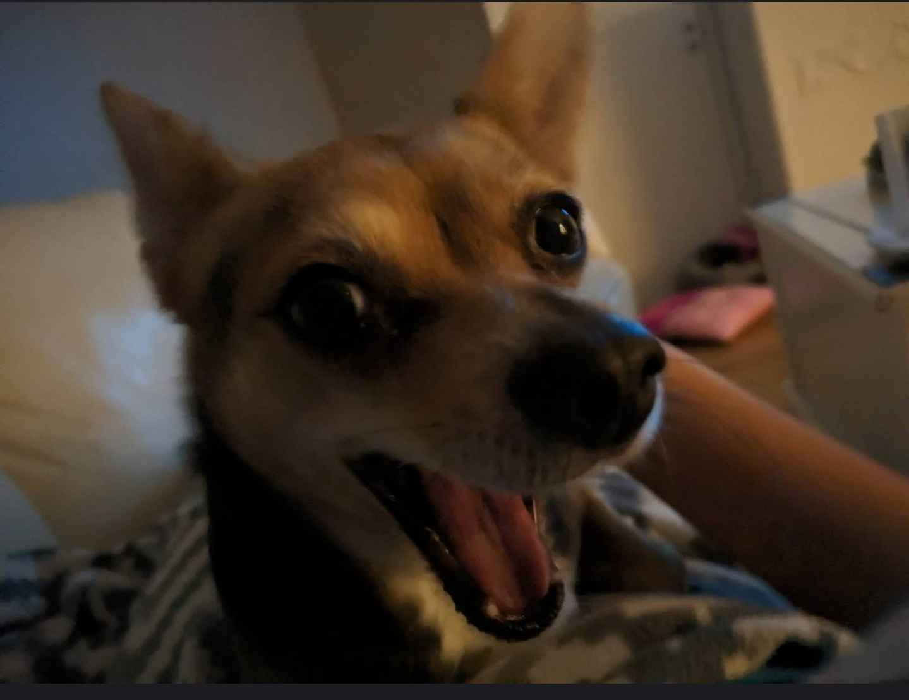
Linda är glad igen
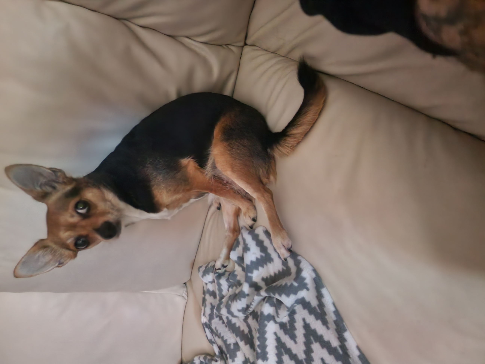
Linda sitter nerLindas favoritbok
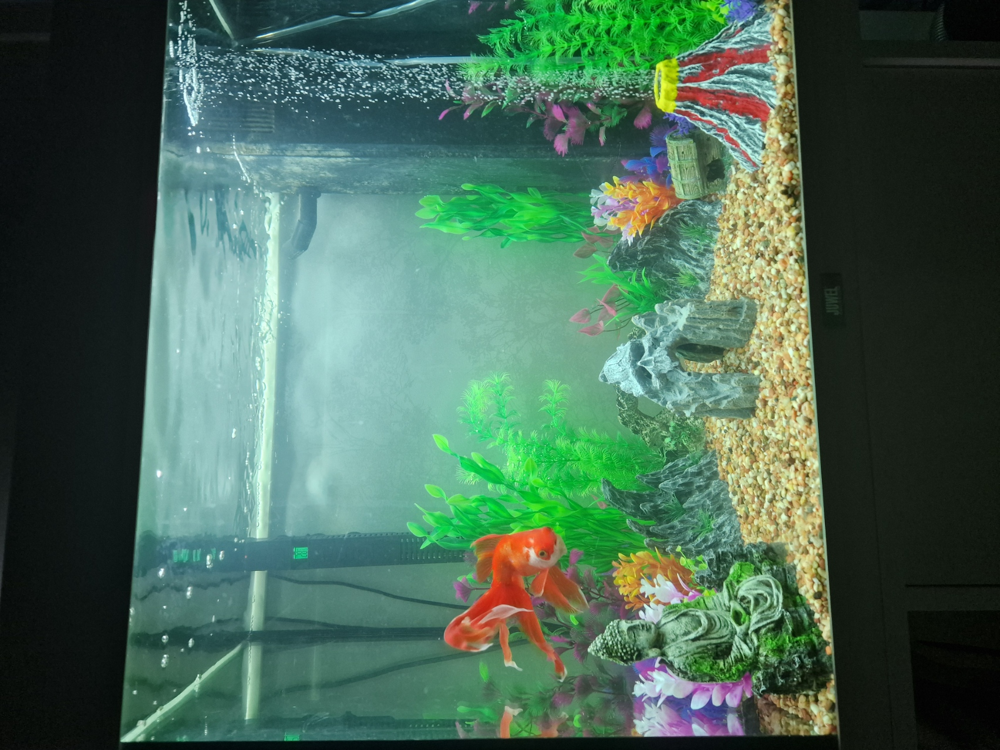
Firren Carlos (RIP) 17 år gammal
Filmer & Bilder från resa till England 2025
Lite bilder av kusin och vänner när vi åkte till Birmingham & London for ADO's konsert den 19:e Juni
Blev lite Korean BBQ och lite F1 Bar med simulator.
Tyvärr så var det inte tillåtet att filma eller ta bilder så klippen från konserten e från officiella
kanaler.
Bilder
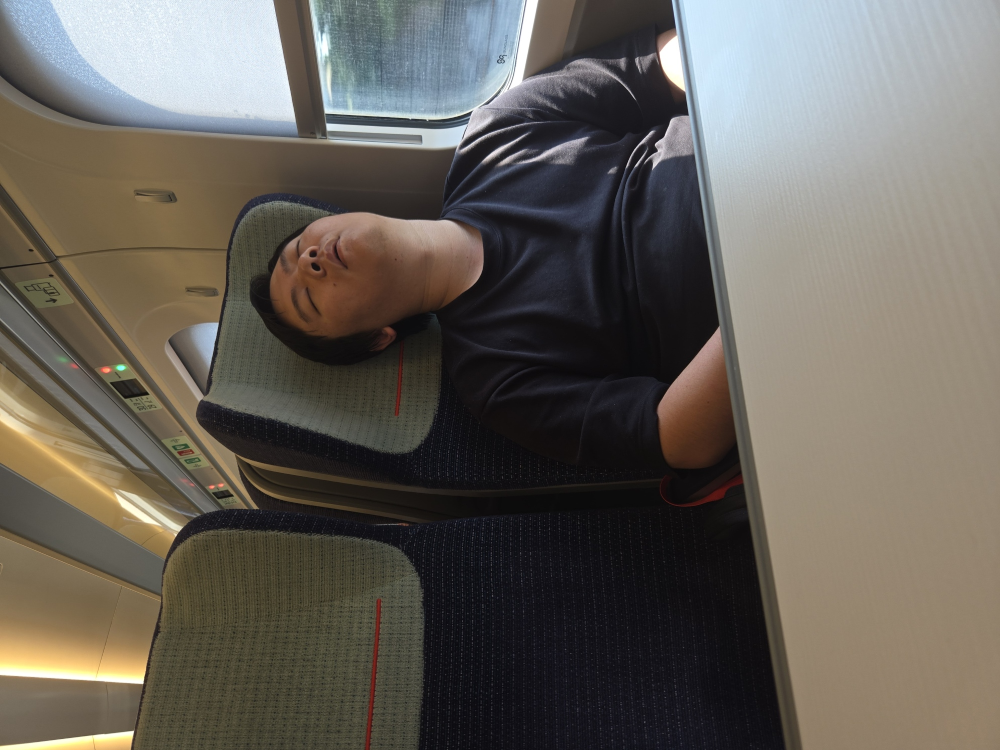
Ca två timmar resa till London så kusinen somnade
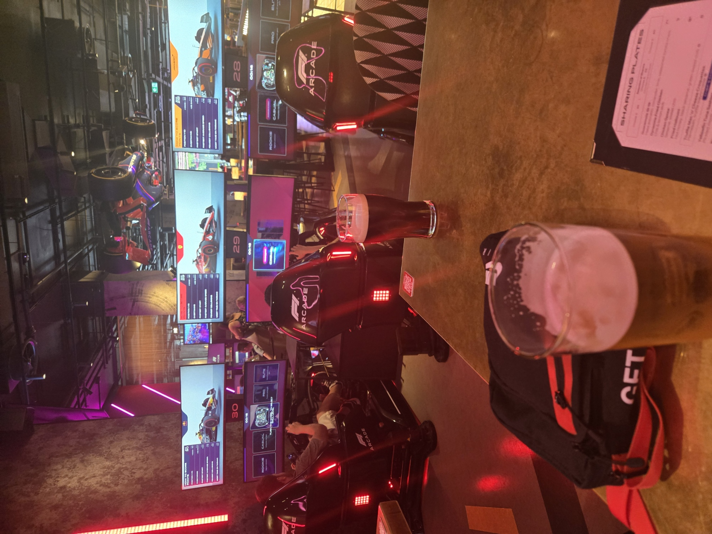
Vi körde ett par race på F1 Baren, blev ett par birror och lite glass
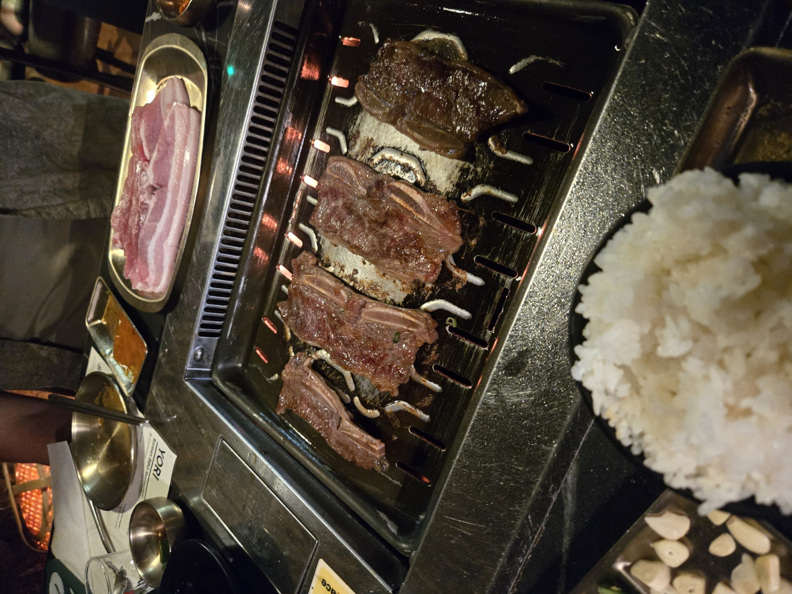
Blev lite Koreansk BBQ innan konserten
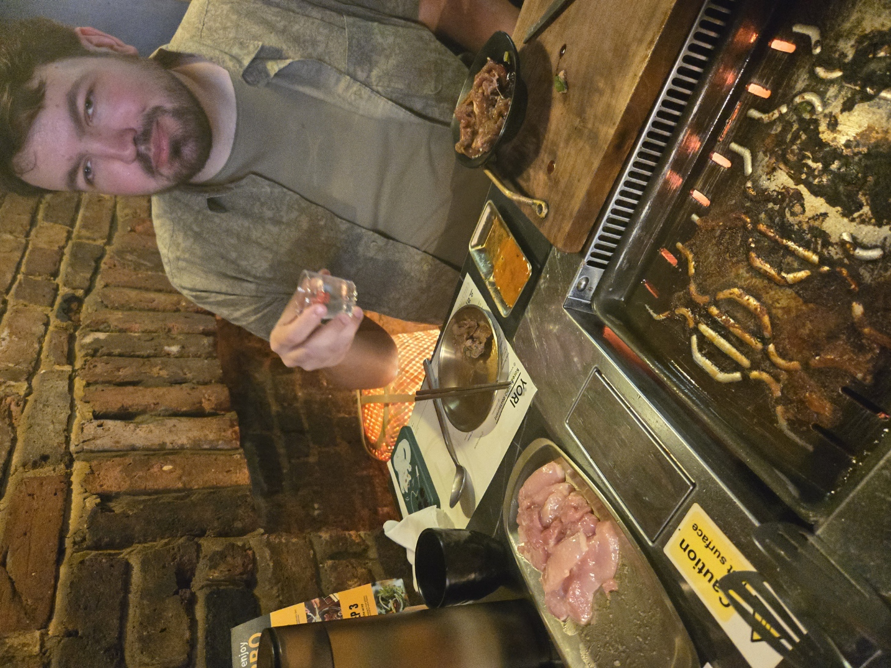
Ingen Koreansk BBQ utan Soju (Polare på bilden)
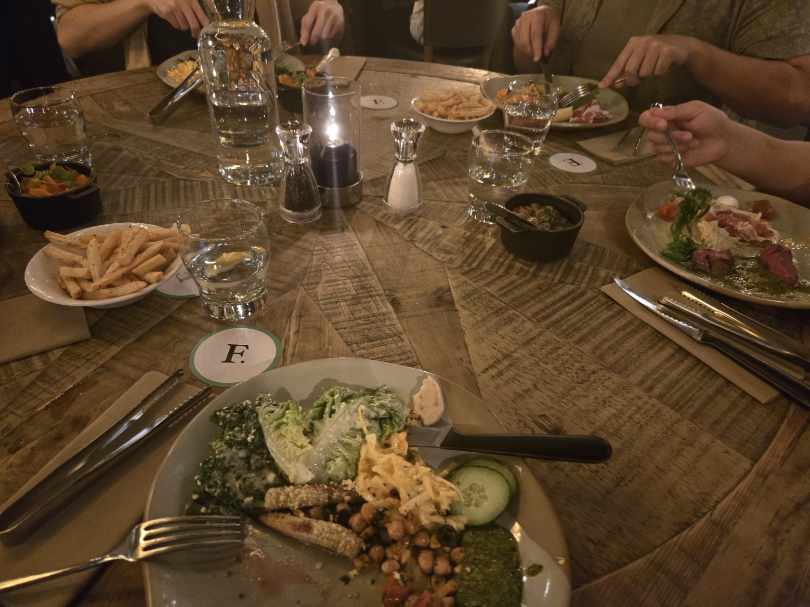
Vi fick kött rotationer på en Brasiliansk steakhouse
Filmer
ADO London 02 Arena 19:e Juni (Vi står någonstans i mitten)Annan vinkel